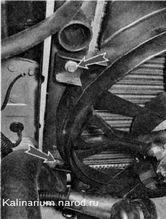
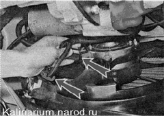
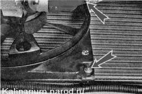
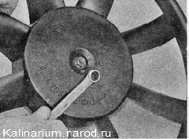

Вентилятор радиатора — снятие, разборка и установка
Причина и спедствие
Распространенной причиной перегрева двигателя является неработающий вентилятор охлаждения. В большинстве переднеприводных автомобилей и многих моделях автомобилей с задним приводом используются вентиляторы охлаждения с электромотором. Неисправность сети питания вентилятора охлаждения часто приводит к перегреву двигателя при медленном движении автомобиля в городском цикле.
Даже незначительный перегрев двигателя вызывает размягчение и разрушение резиновых вакуумных шлангов и уплотнительных прокладок. Среди уплотнительных прокладок больше всего страдают от перегрева прокладки крышек головок блока цилиндров и прокладки впускных коллекторов. Повреждение уплотнительной прокладки и/или вакуумного шланга часто заканчивается подсосом воздуха (потерей разрежения), который приводит к обеднению топливно-воздушной смеси. Обедненная смесь сгорая, создает перегрев в цилиндрах, способствуя еще большему перегреву двигателя.
Бортовой компьютер во многих случаях способен компенсировать незначительный подсос воздуха (потерю разрежения), но если утечка становится достаточно большой, это приводит к нарушению нормальной работы двигателя, особенно на холостом ходу. При достаточно большой утечке компьютер может выдать код диагностики, сигнализирующий об обедненной смеси. Если в системе самодиагностики такой код отсутствует, то может быть выдан код, сигнализирующий о том, что датчик давления во впускном коллекторе неисправен или его показания находятся за пределами допустимого диапазона.
Таким образом, зачастую типичное серьезное нарушение работы двигателя сводится к простой неисправности в системе охлаждения двигателя, которую легко устранить.

Для выполнения работы потребуется смотровая канава или эстакада.
Снятие
1. Подготавливаем автомобиль к выполнению работы
2. Снимаем воздушный фильтр и его воздуховод
3. Торцовой головкой на 10 мм отворачиваем два болта левого крепления кожуха электровентилятора к радиатору (для наглядности на фото верхний шланг радиатора снят).
4. Под днищем автомобиля отсоединяем колодку жгута проводов от электровентилятора и разъединяем колодку жгута проводов дополнительного резистора .

5. Торцовым ключом на 10 мм отворачиваем две гайки правого крепления кожуха вентилятора (верхняя гайка на фото не видна).

6. Аккуратно извлекаем электровентилятор из моторного отсека.
Разборка
1. Торцовым ключом на 10 мм отворачиваем три гайки крепления электродвигателя к кожуху.
2. Извлекаем электродвигатель из кожуха.
3. При необходимости накидным ключом на 10 мм отворачиваем гайку крепления крыльчатки вентилятора и снимаем крыльчатку с вала электродвигателя.
Предупреждение
На крыльчатке может быть установлена металлическая балансировочная скоба.
Не удаляйте ее.
Сборка и установка
Собираем и устанавливаем электровентилятор в обратной последовательности.